off the clock
music
I like to pretend that I have good music taste. For those curious, these are some of my favorite albums of all time:
-
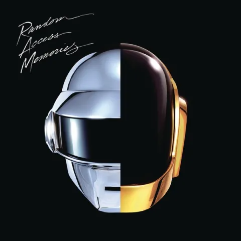
Random Access MemoriesDaft Punk -
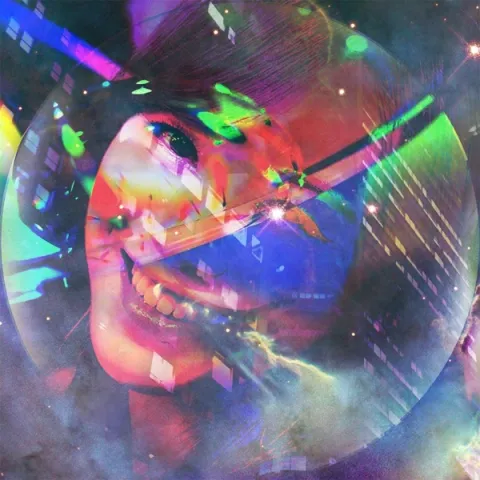
I'll Try Living Like Thisdeath's dynamic shroud -
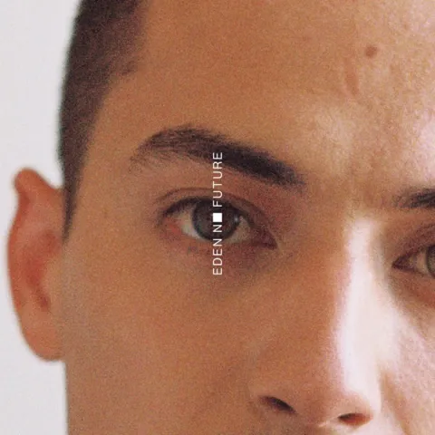
No Futureeden -
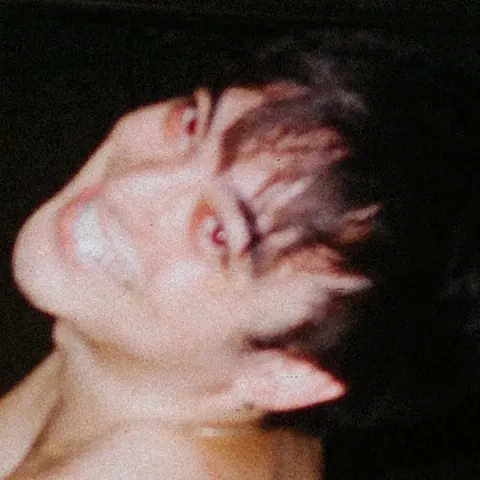
Ballads 1Joji -
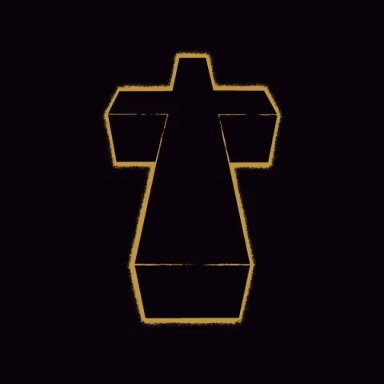
JusticeJustice -
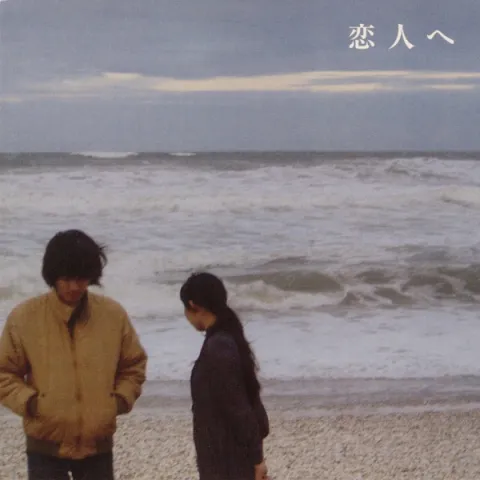
For LoversLamp -
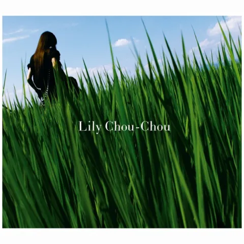
呼吸 (Kokyuu)Lily Chou-Chou -
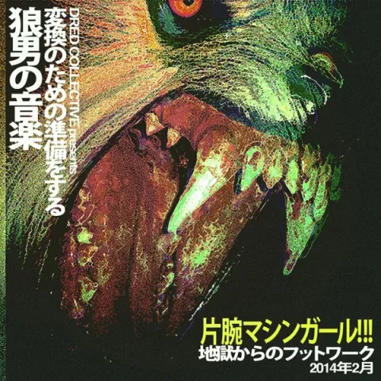
WlfgrlMachine Girl -
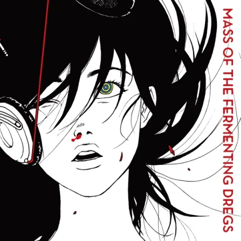
ワールドイズユアーズ (World Is Yours)Mass of the Fermenting Dregs -
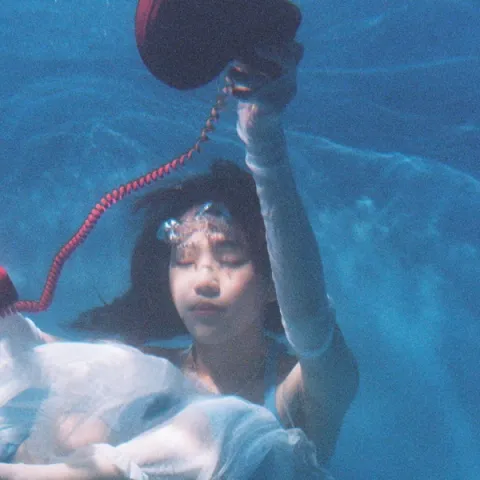
A Call from My DreamMeaningful Stone -
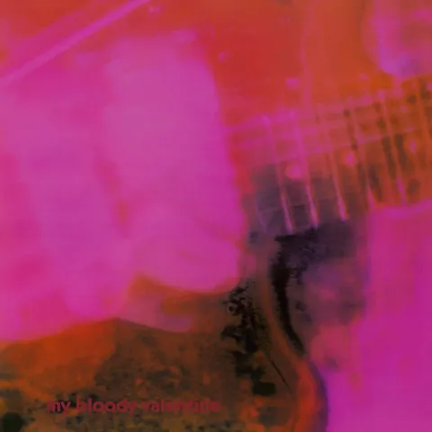
LovelessMy Bloody Valentine -
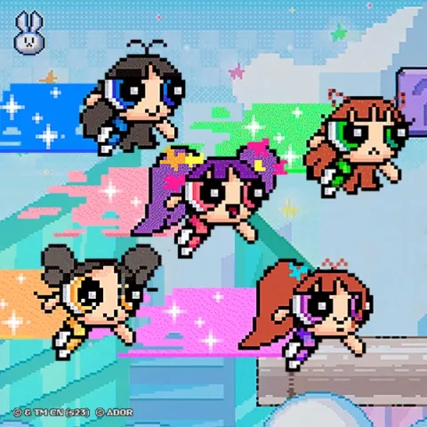
Get UpNewJeans -
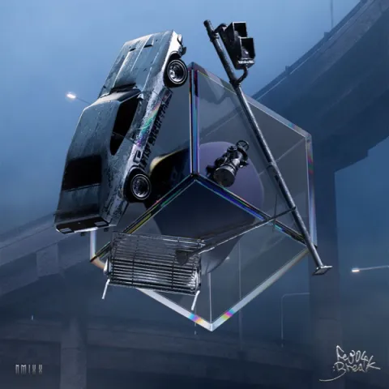
Fe3O4: BREAKNMIXX -
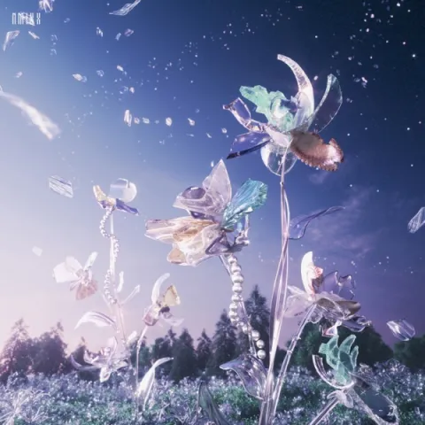
Heavy SerenadeNMIXX -
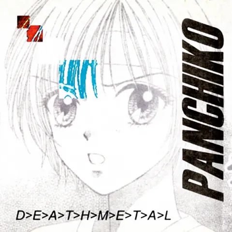
D>E>A>T>H>M>E>T>A>LPanchiko -
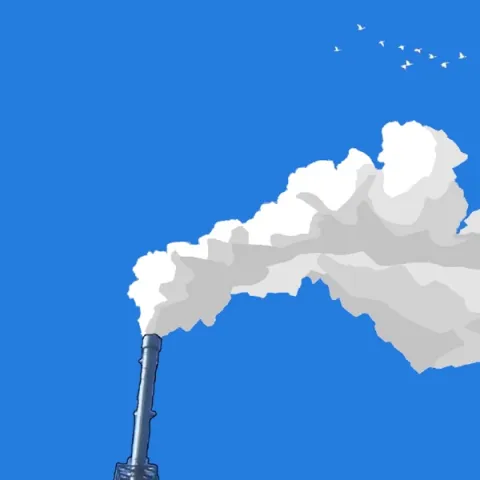
To See the Next Part of the DreamParannoul
counter-strike
Counter-Strike takes up a larger chunk of my free time than I'd like to admit.
I play as AWP for Friendly Fire, a team of mostly friends from college. We finished the last ESEA season in Main with a record of 4-10, then flew out to Frag St. Louis, an open LAN, and placed dead last. Still worth the trip.
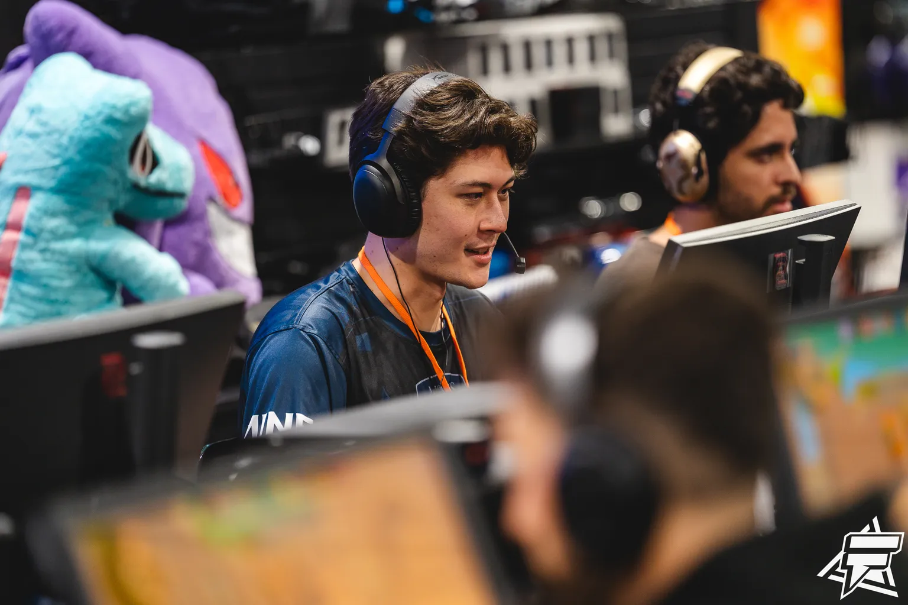
I've also captained Mines' collegiate Counter-Strike team since May 2024, playing AWP there too.